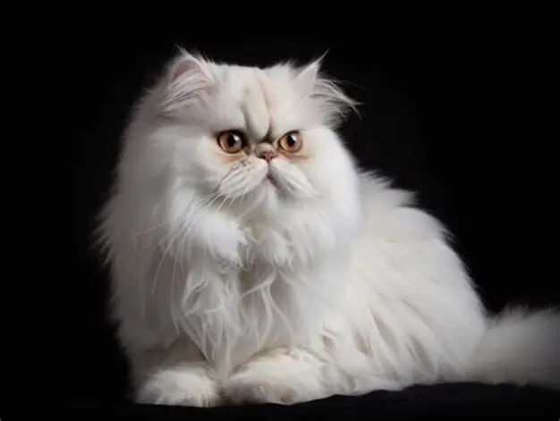

Mèo Ba Tư (Persian)
- Nguồn gốc: Vùng Ba Tư (Iran ngày nay), hoàn thiện ở châu Âu.
- Ngoại hình: Lông dài, dày, mượt; mặt tròn, mũi ngắn; kích thước trung bình (3–5,5 kg).
- Tính cách: Hiền lành, điềm tĩnh.
- Nổi bật: Cần chải lông hằng ngày để tránh rối.